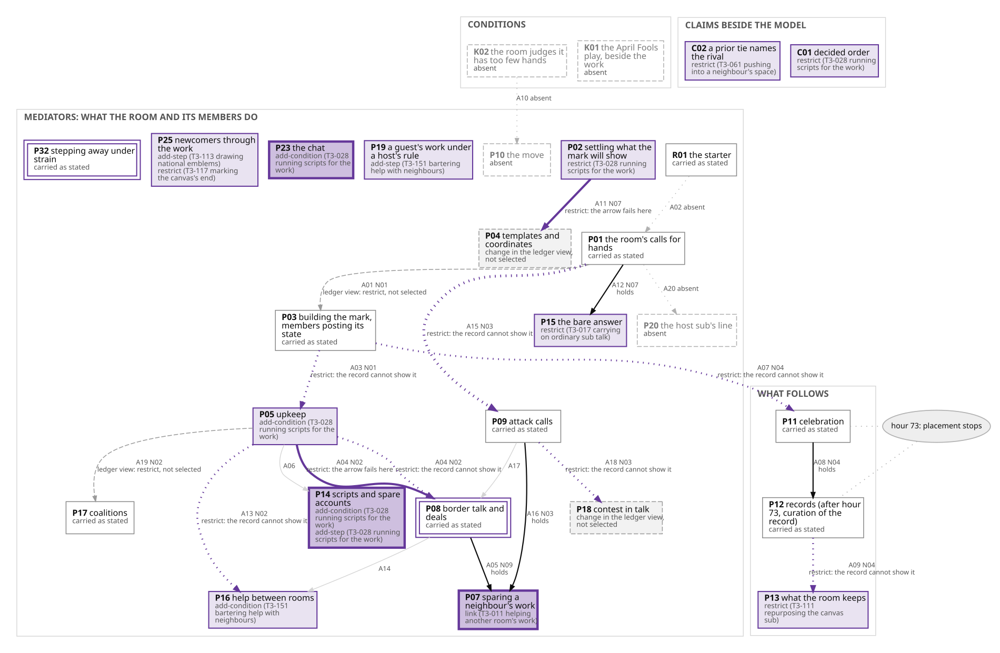

r/PlaceNL: organizational forms
- Form
- B, Behind the thread: chat, scripts, raids (141 communities)
- Position
- defining community, fourth nearest of 113 to the form's centre
- Changes
- 22 selected: 14 restrict, 4 add a condition, 3 add a step, 1 adds a link
- Other cuts
- form A at four groups, form H at eight
Communities that asked for similar changes form a group. r/PlaceNL anchors the raids in form B and holds its scripts and chat too.
Where it departs from its form
Most of its restrictions say the record cannot show an arrow, which fits a record that starts on the second day and moves its plans to a chat. Unlike its form, its scripts were its decided order: permission to change the shared target sat with a few, and the scripts erased designs the community had announced.
Form B a residual grouping, not a form
, held together by three facets: the chat, the scripts and the raids.
In detail
Everything the run recorded for r/PlaceNL at this stage. Long material is folded; each fold says what it holds.
PlaceNL in the final forms
Behind the thread: chat, scripts, raids
Form B’s own telling calls it “a residual grouping, not a form”, held together by three facets: the chat, the scripts and the raids. r/PlaceNL is the community chosen for the raids, and it holds the scripts and the chat too. It shows four of B’s seven changed cells: the scripts (P14) and the chat (P23), both robust, and sparing passed through the tools (P07) and a call turned on a rival (A15), both marginal.
Its 22 changes: 14 restrict, 4 add a condition, 3 add a step, 1 links. Most of its restricts say the record cannot show the arrow, which fits a record that starts on the second day and moves its plans to a chat. Where it departs from its form: its scripts were its decided order. Permission to change the shared target sat with a few, and the scripts erased designs the community had announced.

The aggregator’s drawing of r/PlaceNL in the model (D6a-17), redrawn in this page’s style: the C5 model with P19, P23, P25 and P32 added, what the community carries as stated, what it changes and form B’s cells. A04 carries two lines because the community coder’s restrict says both that the arrow fails and that the record cannot show it. The form and all six side by side are on the v43 Ladder page.
Read form B in the population model · Compare PlaceNL’s changes and codes · Read the full population-model account of PlaceNL
r/PlaceNL: introduction and the five stages · How this stage works